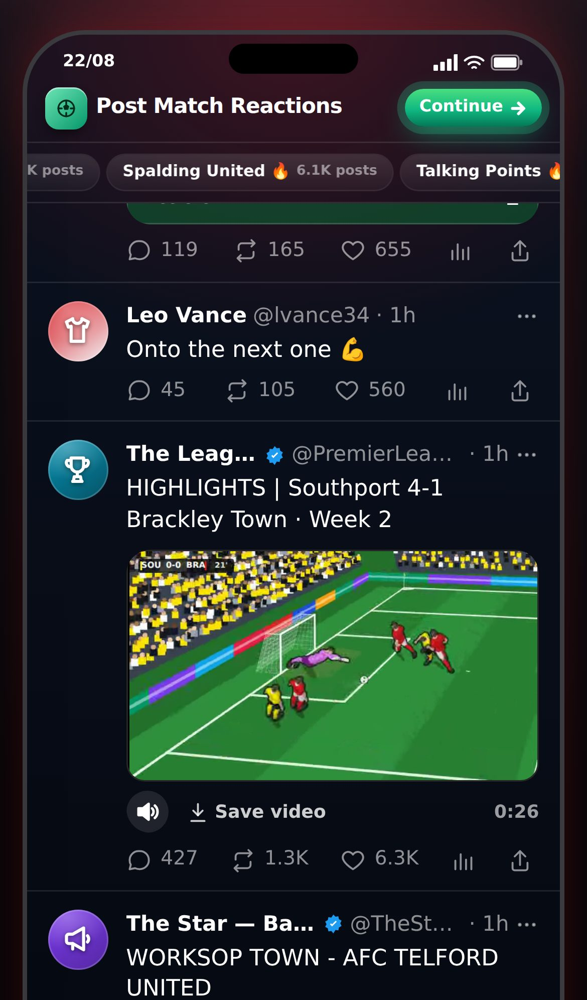

Team-mates play smarter: through-balls reach the runner, and good passers lay it off before he goes offside. Every match now gets its highlights video. Plus dev tools to test any club and any player.
You send A on a run, tell B to lay it off to A, and pass to B. B takes a slow touch, A runs past the last defender, and the pass is offside. Even a top passer did this.
Every team-mate took the same long touch (almost half a second) and aimed at where A was, whatever his passing was.
Measured on the same 158 lay-offs, top passer (88):
A weak passer (55) on the same chances: 16% offside, 32% goals. About 1 lay-off in 4, the top passer shoots instead of passing.
You sent a man on a run and played a through-ball, but he ran back towards the ball instead of onto it.
If his run finished while you were still aiming, the order was dropped. And a man still on his run ignored a ball played ahead of him until he reached the end of it.
He keeps to the end of his run and waits there. When the ball comes near his line, he goes to meet it where it is going, then shoots (or lays it off, if you told him to). Asked for by you: run, then the ball when it is close.
Over 242 onside through-balls with the runner 8 m past the line. Goals went up too: 22–35% → 26–38%.
Found while testing smart lay-offs: a lay-off sometimes gave the assist to nobody.
The new quick touch can take the ball and pass it in one instant, and the credit only looked at who had it before.
The lay-off is credited to the man who played it.
Every match with a goal gets one "HIGHLIGHTS" post with a video of every goal, both sides. Goals that were not recorded (the other team's, and any you didn't see) are made up, the same way as other matches' goals.
If you scored or set one up, your club also posts a video of just those.
The phone makes videos in this order: the highlights and your goals, then your match's other posts, then other matches. You asked never to wait for your highlights behind "some random games".

Seen in the real game: "HIGHLIGHTS | Southport 4-1 Brackley Town · Week 2", playing a 26-second video of all five goals.
For testing finishing without playing seasons to reach the Premier League. Settings → Dev — Career: move straight to any club in the seven English leagues. Settings → Dev — Squad: search any real player, add him, remove anyone, and pin men so they start every match.
Testers only (tester access).
Seen: five real career matches, signed out, made-up squads. The HIGHLIGHTS post came after every match with a goal, with both teams' goals, ready in about 11–15 seconds without scrolling. Your match's videos were made before other matches'. No freezes, no page errors.
Not seen: a lay-off played in those matches (the numbers above come from 158 simulated chances). The your-goals post and "highlights first among your own posts" were fixed after that playtest and are checked by tests only. The dev tools were not opened in a browser this round.
No. A chip needs a keeper well off his line and a good finisher, and you start careers in low leagues with weak team-mates, so they are rare. That is why the dev tools above exist: put Haaland in your team and watch.
Goal videos and sound checked in a test browser only.
The phone was locked early in the test careers. Checked in tests and stills.
Measured in 158 simulated chances, not watched in a real match. Worth a look on your phone.
Added: a two-man commentary box (78 lines, new voice) · videos made in the background, playing as you scroll · players the right size · 3 new cameras, a TikTok edit, 3 new video accounts · videos of other clubs' goals.
Numbers: 9 → 78 commentary lines · 17 → 29 goal videos in 30 test matches · 270 tests.
Still open from this version: not heard on an iPhone · England tab videos not seen in the real game.
Added: crowd, kick, net and a commentator on goal videos · a speaker button (remembered) · sound inside a saved video · 9 commentator lines on the Sound Board.
Numbers: crowd ~3× louder at the goal · 0.2 s to mix · 267 tests.
Still open from this version: the voice (replaced in v0.12) · no names · not heard on an iPhone.
Added: every goal recorded as you play · real goal videos in the feed from three cameras · highlights reels · Save video · Goal Replays play the recording.
Numbers: 7–15 KB a goal · 266 tests.
Added: one-hand keeper saves, catches, parries and fumbles · team-mates take touches and shoot, pass, head, block and clear with their own legs · the Animations test page and its dials · Settings → Look → Animations: New | Old.
Fixed: a caught ball stayed where the keeper stood while he slid away.
Numbers: outcome counts identical over 5,200 seeded chances (a look-only change).
Still open from this version: the 3D keeper has no catch-hold or get-up · a caught ball can sit slightly off the gloves in the classic view · strikes may still be subtle on a phone · four questions for you on that page.
Changed: every career is 20 seasons (no "Do you go again?" from 33) · the career overview is the end screen.
Added: "Final season" warning after season 19 · "The final whistle" after season 20 · the Hall of Fame on the title screen · the new All seasons page, with a New | Old switch.
Fixed: the last season's Ballon d'Or and awards were never counted · a season's row named the wrong club after a summer move · three playtest finds.
Numbers: 20 seasons · 0 careers lost by starting again · 108 → 15 KB per Hall career · 246 tests.
Still open from this version: star_hall_of_fame.sql to run · the world does not age.
Fixed: trial free kicks and penalties too hard · five-a-side keepers never dived · no way back from several screens · Goalie Mode scrolled.
Added: dribble passes with green/amber/red rings · knuckleball, power shot and keeper howlers (test match only) · New / Old switches for keepers and dribble runs.
Numbers: top corners v a 90 keeper 26% → 43% · trial free kicks 36% → 48% · 243 tests.
Still open from this version: listed under Known issues above.
Fixed: five-a-side could freeze solid mid-match. Added: dev cheats for testing · real extra power for owning your own club.
Fixed: Goalie Mode's pitch never drew. Added: other players on the pitch · penalty · free kick with a real wall.
Fixed: the aim sat about 0.42 m from the cursor. Added: first-time strike · near/far post · shot names.
Added: Goalie Mode in the Casino · a stadium behind the goal.
Fixed: scoring was halved · chances match their own name. Added: Simulate · up to 60 versions per chance type.